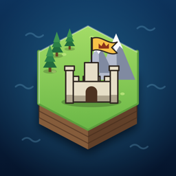

HEXARCH
Privacy Policy
Last updated: 8 November 2026
Short version: we do not collect any personal data. Hexarch has no ads, no analytics, no tracking and no account of its own. Your games stay on your device. Purchases and online play are handled by Apple.
Who we are
Hexarch is made by SwissGrat (Yves Flückiger), Switzerland. Website: swissgrat.ch · Email: contact@swissgrat.ch
What the app stores on your device
Hexarch saves the following on your device only, inside the app's private storage:
- Your saved games and the automatic save after each turn
- Your settings (player name, sound, music, haptics, turn speed)
- Your local records (matches played, victories, unlocked civilizations)
This data is never sent to us. Deleting the app deletes it.
In-app purchases
Optional purchases (Unlock Everything and tips) are processed entirely by Apple through the App Store. We never see your name, Apple Account, or payment details. The app only asks Apple on your device which items you own, so it can unlock them.
Game Center
Online matches, leaderboards and achievements use Apple's Game Center and only work if you are signed in to Game Center. Apple processes this data under Apple's Privacy Policy. Your Game Center nickname, scores and achievements may be visible to other players. During an online match, the current match state is exchanged with the other players through Game Center. We do not receive or store any of this data on our own servers — we don't have any.
Rival messages
On devices that support Apple Intelligence, short messages from rival leaders may be written by Apple's on-device language model. This happens entirely on your device; nothing is sent to us or to a cloud service. On other devices, built-in texts are used.
Sharing a match
If you choose Share Match, the game creates a match file and hands it to the standard iOS share sheet. The file only goes where you send it (for example Messages, AirDrop or Files). Hexarch itself does not upload it anywhere.
What the app does not do
- No collection of personal information by us
- No advertising or advertising identifiers
- No analytics, crash-reporting or tracking services
- No account or sign-in of its own
Children
Because we collect no personal data, we collect none from children either.
Changes
If this policy changes, the new version will be published on this page with an updated date.
Contact
Questions about privacy? Write to contact@swissgrat.ch or visit swissgrat.ch.